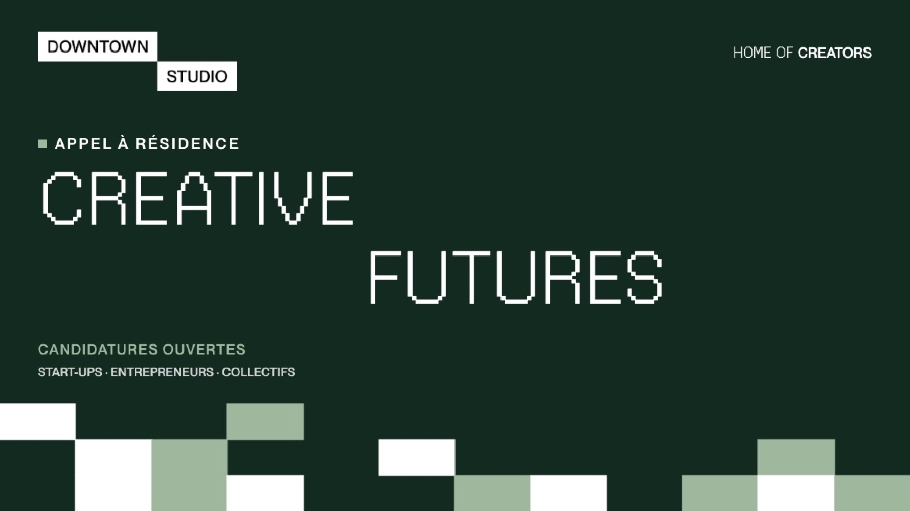

Résidence Explore
Downtown Studio accueille en résidence des projets qui explorent les liens entre nouvelles formes de narration et technologies émergentes. En retour, les résidents partagent leur expertise avec la communauté.

Une résidence de douze mois pour des start-ups, des collectifs de une à quatre personnes et des entrepreneurs de moins de trois ans d'existence, suisses ou internationaux, à la croisée de la création numérique et des nouvelles technologies.
Une attention particulière va aux projets qui explorent les interactions entre nouvelles formes de narration et technologies émergentes. Quatre projets sont retenus par édition.
Ce que la résidence offre
- BureauUn bureau mis à disposition gratuitement pendant un an
- AdresseUne domiciliation
- MaisonUn membership Downtown Studio d'un an
- SallesUn tarif préférentiel sur les infrastructures de production et de post-production
- SuiviUn accompagnement technique et curatorial
- FormationL'accès aux formations proposées à Downtown Studio
- VisibilitéLe projet présenté sur les canaux de Downtown Studio
En retour
Les résidents proposent plusieurs événements de partage d'expertise liés à leur projet. Ils apparaissent dans l'agenda, série Restitutions de résidence.
Summer All Access
Pendant l'été, Downtown Studio met toutes ses infrastructures de post-production à disposition de projets audiovisuels ambitieux en phase de finalisation.
Le dossier de candidature s'obtient sur demande à contact@downtownstudio.ch.
Ils sont passés par Explore
R.01Salar Shahna
XR, IA · Dirty Bacon Productions

Trois projets à la frontière de la XR, du cinéma et de l'IA.
SensoryX Creative, Relife et Kitchen XR Training.
Fiche résidenceR.02Vincent Fichera · O2
Film interactif
« La résidence Explore a été un vrai game changer et un boost créatif pour notre film interactif O2. »
Trois sélections en festivals internationaux dès le pitch, une coproduction internationale et un diffuseur en Asie, un prototype IA testé par la communauté de Downtown.
Résidents actuels : [À VALIDER : résidents Explore de l'édition en cours]